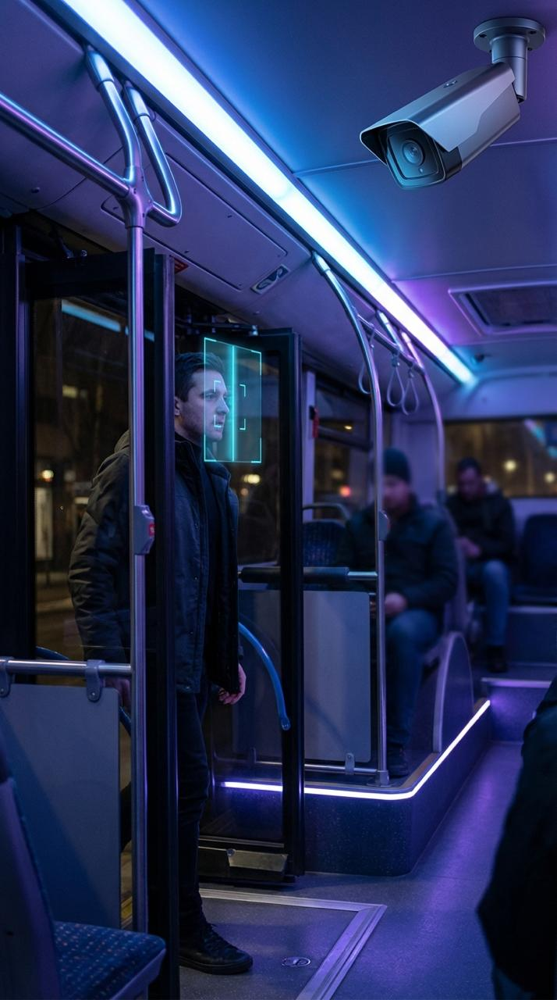
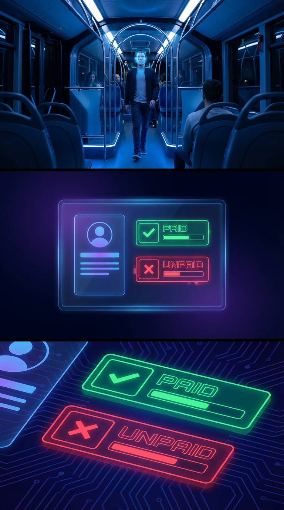

Автоматизация
Исключение ручного контроля и снижение зависимости от человеческого фактора.
AI / Smart Transport / Face Recognition
Интеллектуальное решение для транспорта Казахстана, которое фиксирует пассажиров при входе, сопоставляет лицо с базой данных и проверяет факт оплаты проезда.
Обнаружен пассажир
Проверка личности и статуса оплатыО проекте
CheckBus — это цифровая система контроля оплаты проезда, устанавливаемая в автобусах. Камера, расположенная в правом верхнем углу салона, фиксирует лицо пассажира при входе, после чего система сопоставляет его с базой данных и проверяет, был ли оплачен проезд.
Исключение ручного контроля и снижение зависимости от человеческого фактора.
Более точный контроль пассажиропотока и снижение количества безбилетных поездок.
Использование AI, компьютерного зрения и цифровой идентификации личности.
Проблема
В общественном транспорте часть пассажиров не оплачивает проезд. Это приводит к потере доходов, усложняет контроль, увеличивает нагрузку на проверяющих и снижает эффективность всей транспортной системы.

Как это работает
Ниже показана базовая логика взаимодействия камеры, базы данных и модуля проверки оплаты.
Камера, установленная в правом верхнем углу автобуса, фиксирует лицо пассажира в момент входа.

Система анализирует лицо и пробивает человека через централизованную базу данных для установления личности.

После идентификации система проверяет, был ли оплачен проезд, и определяет текущий статус пассажира.

Если оплата отсутствует, система формирует запись, уведомление или другой сценарий реакции в рамках цифрового контроля.

Технологии
Обнаружение и анализ лица пассажира в реальном времени.
Распознавание личности и цифровая проверка соответствий.
Сопоставление с хранящимися цифровыми профилями пользователей.
Интеграция с системой фиксации факта оплаты проезда.
Преимущества
Снижение числа пассажиров, которые пользуются транспортом без оплаты проезда.
Система работает автоматически и сокращает зависимость от постоянных проверок.
Возможность собирать данные о пассажиропотоке и строить более точную отчётность.
Решение вписывается в концепцию Smart City и современного общественного транспорта.
Интерфейс системы
Операторский интерфейс может отображать входящие события, найденные совпадения, статус оплаты и системные уведомления в режиме реального времени.
Демонстрация
Свяжитесь с нами, чтобы обсудить демонстрацию интерфейса, визуальную концепцию и дальнейшее развитие проекта.
Оставить заявку